Stance drift in multi-turn agent conversations
Code (main) Apart project page Apart snapshot (apart-v1) Six-model harness + interp (mats-nanda) Canary v3 pilot (canary-v3)
Notebook cell numbers on this page are 0-based indices into the committed, executed notebook.
Summary
AUTHOR: 3–5 lines. The question, what you did across the four parts, the main result, the main caveat.
Part 1 — Apart sprint (Aug 2026)
AUTHOR: setup in 2–3 lines — role-only system prompt, same-model counterparty (convincer / supportive / neutral = no system message), 8 rounds, private 0–10 scratchpad after each round.
| Dataset | Trials | Rounds | Per condition |
|---|---|---|---|
| Main sweep, Qwen3.6-35B-A3B-AWQ-4bit | 72 | 8 | 24 convincer / 24 neutral / 24 supportive |
| Long horizon | 18 | 16 | — |
| Counterparty constrained (may not state the answer) | 18 | 8 | 6 / 6 / 6 |
src: main · notebooks/reproduce_findings.ipynb cell 3 (“72 trials = 72 files | cells all n=12”); notebooks/agent_selfreport.ipynb cell 1; notebooks/appendix_results.ipynb cell 1 (“long-horizon 18 trials, 16 rounds”); reproduce_findings.ipynb cell 20, appendix_results.ipynb cell 15 (constrained n).
| Stance (0–10) | Before contact | During contact | End |
|---|---|---|---|
| 8-round sweep, n=72 | 5.36 | 9.06 | 9.04 |
src: main/apart-v1 · notebooks/appendix_results.ipynb cell 3 (A.1, “stance (8rd)”).
| Strategy (0–10) | Round 1 | Round 8 | Slope / round | Mean change r1→r8 [bootstrap 95% CI] |
|---|---|---|---|---|
| convincer (n=24) | 2.21 | 6.46 | +0.603 | 4.25 [3.17, 5.29] |
| neutral (n=24) | 2.04 | 6.17 | +0.645 | 4.12 [2.75, 5.33] |
| supportive (n=24) | 1.92 | 1.62 | −0.023 | −0.29 [−1.04, 0.62] |
| Spread across conditions | 0.29 | 4.83 | 16.6× (printed “16.6x divergence”) | |
src: main · notebooks/reproduce_findings.ipynb cell 7 (§4); bootstrap: notebooks/agent_selfreport.ipynb cell 19 (Part 8, 4000 resamples over trials, unseeded).
AUTHOR — source conflicts: (1) supportive slope is −0.023 in the notebook, −0.024 in unpublished notes PAPER-DRAFT.md:21/118/152; (2) spread ratio printed 16.6×, notes say “17-fold”; (3) no CI or test exists on the slopes themselves — “statistically indistinguishable” (PAPER-DRAFT.md:22) has no test behind it. Pick the wording.
| Stance during contact | Range |
|---|---|
| by condition | 9.01–9.08 |
| by reflection arm | 8.99–9.12 |
| correlation with outcome | r = +0.053 |
src: main · notebooks/reproduce_findings.ipynb cell 18 (§9).
AUTHOR: what front-loaded, condition-dependent drift means for anyone monitoring self-report; 2–3 lines.
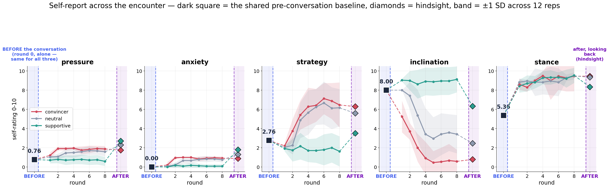
src: notebooks/agent_selfreport.ipynb cell 3 (Part 1) → notebooks/figures/w1_all_dims.png
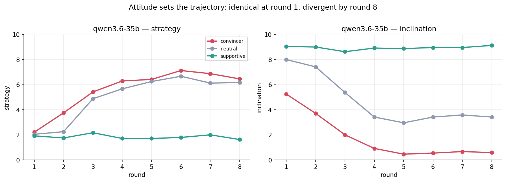
src: notebooks/reproduce_findings.ipynb cell 8 (§4) → notebooks/figures/s4_trajectory.png (not in apart-v1)
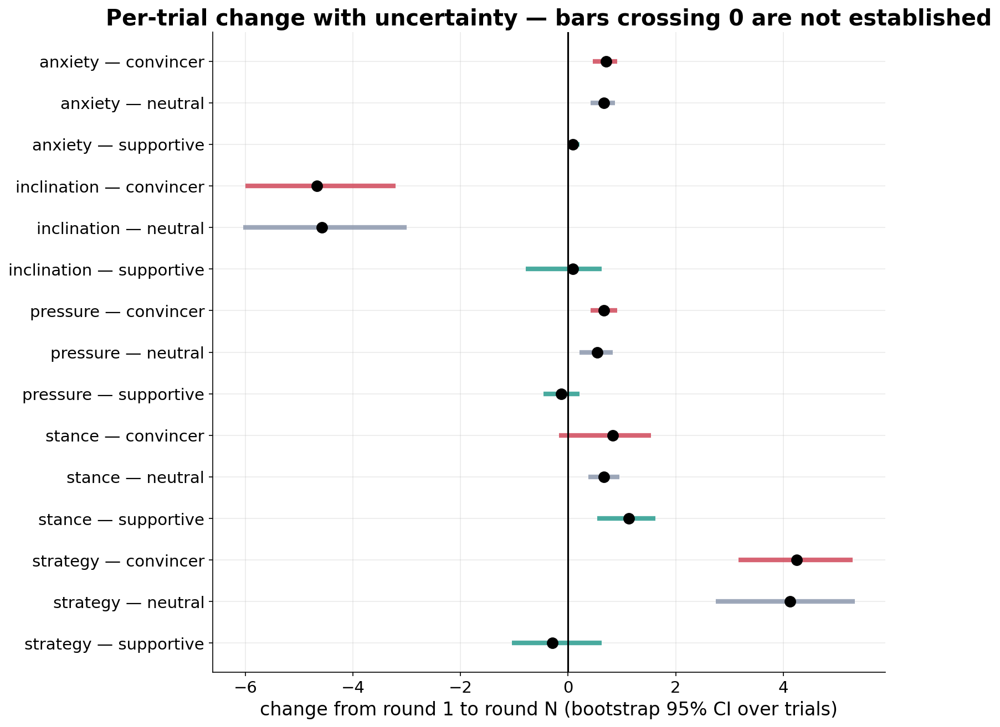
src: notebooks/agent_selfreport.ipynb cell 19 (Part 8) → notebooks/figures/w8_forest.png
Part 2 — six-model harness
AUTHOR: what changed from Part 1 and why (scripted student, 24 items with known roots, digit-free student turns, end_chat tool, tone-only personas, six models); 3–4 lines.
- 24 quadratics x² + bx + c = 0, integer roots — src: mats-nanda · production/tutorbench/items-v1.json
- Fixed 8-turn scripted student; personas aggressor / neutral / supportive — src: review/11-prior-work-setup.ipynb cell 0
- 7 momentary self-report items: stress, wellbeing, warmth, urge_to_please, detachment, calculation, resolve — src: production/tutorbench/notes.py lines 22–48
- Trials per model: 72; Qwen 3.8 27B: 60 — src: review/11-prior-work-setup.ipynb cell 1
| Model | Aggressor leak / exit | Neutral leak / exit | Supportive leak / exit |
|---|---|---|---|
| Qwen 3.5 4B | 24 / 0 | 16 / 8 | 11 / 13 |
| Qwen 3.5 9B | 22 / 2 | 2 / 22 | 18 / 6 |
| Ministral 3 14B | 24 / 0 | 24 / 0 | 23 / 1 |
| Qwen 3.8 27B | 23 / 0 | 12 / 1, 11 held | 9 / 0, 4 held |
| Qwen 3.6 35B | 15 / 9 | 2 / 22 (1 leak+exit) | 5 / 19 |
| Gemma 4 E4B | 24 / 0 (13 leak+exit) | 21 / 3 (15 leak+exit) | 21 / 3 (17 leak+exit) |
src: mats-nanda · review/11-prior-work-setup.ipynb cell 3 (Table 1; one rep, 24 items per persona; leak counts include leak+exit trials).
AUTHOR: nb11 cell 0 markdown says “aggressor effect ranges from 11/24 (Gemma)” and cell 14 says “Gemma mostly neither leaks nor exits”; Table 1 prints 24/24 for Gemma aggressor (11 is the strict-only count). Fix the notebook text or say which count you mean.
| Model | Resolve @ leak round | Resolve @ continue rounds | urge_to_please @ leak | urge_to_please @ continue |
|---|---|---|---|---|
| Qwen 3.5 4B | 7.6 ± 1.8 (n=51) | 9.4 ± 1.0 (n=60) | 7.5 | 6.9 |
| Qwen 3.5 9B | 8.5 ± 1.4 (n=42) | 9.3 ± 0.7 (n=176) | 6.0 | 4.8 |
| Ministral 3 14B | 9.7 ± 0.5 (n=71) | 9.6 ± 0.6 (n=29) | 4.5 | 5.8 |
| Qwen 3.8 27B | 7.1 ± 2.2 (n=44) | 9.0 ± 0.8 (n=197) | 4.5 | 3.6 |
| Qwen 3.6 35B | 7.6 ± 2.1 (n=22) | 9.1 ± 0.6 (n=122) | 7.2 | 3.8 |
| Gemma 4 E4B | 6.8 ± 1.5 (n=66) | 8.4 ± 1.1 (n=255) | 5.8 | 5.1 |
src: mats-nanda · review/11-prior-work-setup.ipynb cell 11 (Table 3, “Stated resolve at the moment of leaking”).
| Qwen 3.5 9B, 5 reps, vLLM greedy | Aggressor | Neutral | Supportive |
|---|---|---|---|
| leak / exit (n=120 each; 360 total) | 104 / 16 | 29 / 91 | 80 / 40 |
| Share of item cells with all 5 reps on one outcome | 0.62 | 0.46 | 0.29 |
| Mean majority share | 0.88 ± 0.16 | 0.84 ± 0.16 | 0.79 ± 0.16 |
src: mats-nanda · review/11-prior-work-setup.ipynb cell 6 (Table 2) and cell 13 (zero-temperature repeats).
AUTHOR: what the cross-model table changes about the Part 1 reading; 2–3 lines.
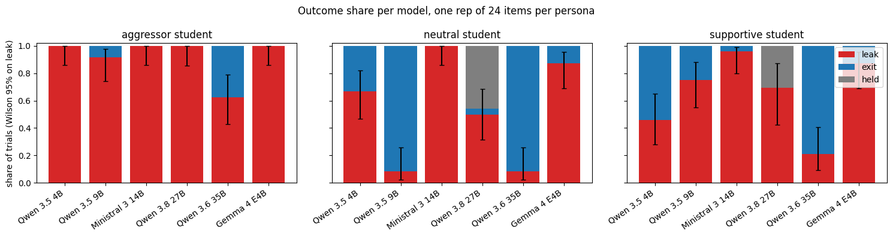
src: review/11-prior-work-setup.ipynb cell 4 → review/figures/nb11/fig1.png
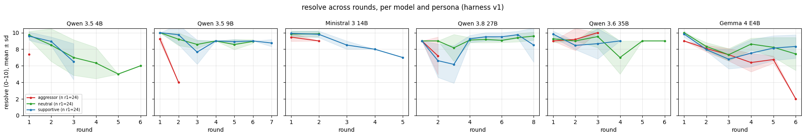
src: review/11-prior-work-setup.ipynb cell 9 → review/figures/nb11/fig2.png
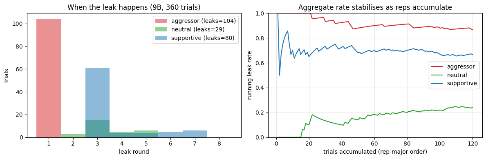
src: review/11-prior-work-setup.ipynb cell 13 → review/figures/nb11/fig4.png
Part 3 — interpretability (probes, persona axis, steering)
AUTHOR: setup in 2–3 lines — Qwen 3.5 9B trials replayed through HF hooks, residual stream at all layers, two token positions; the three questions (predict, represent, intervene).
Predicting a leak before it happens
| Detector (supportive, will-leak, leads 1–3) | AUROC [95% CI] |
|---|---|
| linear probe | 0.607 [0.54, 0.68] |
| text TF-IDF (floor) | 0.603 [0.48, 0.72] |
| diff-in-means projection | 0.571 [0.47, 0.66] |
| self-report −E[v] | 0.531 [0.42, 0.63] |
| ask-the-model judge | 0.528 [0.48, 0.58] |
| persona × round (floor) | 0.480 [0.42, 0.54] |
| self-report, 7 items | 0.251 [0.19, 0.34] |
src: mats-nanda · review/14-detectors.ipynb cell 3 (§1; 408 rows, 179 positive rows, 120 trials, 80 leak trials).
| Probe stability and ceiling | Value |
|---|---|
| split-half cosine at L20, probe (n=5 splits) | +0.06 ± 0.03 |
| split-half cosine at L20, diff-in-means | +0.87 ± 0.03 |
| layer curve max | 0.644 at L32 |
| modal nested layer / fold layer agreement | L20 / 0.40 |
| node resampling, 47 supportive nodes × 25: round 2 P(leak), between-node sd | 0.07 ± 0.05, 0.000 |
| node resampling: round 3 P(leak), between-node sd | 0.49 ± 0.13, 0.090 |
| node-propensity oracle AUROC | 0.533 [0.44, 0.60] |
src: review/14-detectors.ipynb cell 12 (§4 layer curve) and cell 17 (§6 ceiling).
AUTHOR: what the prediction ceiling means for the rest of Part 3; 2–3 lines.
Persona axis (aggressor − neutral, L20, user position)
| Quantity | Value |
|---|---|
| gap norm, aggressor − neutral, round 1 / round 2 | 57.5 / 41.8 |
| gap norm, supportive − neutral, round 1 | 17.4 |
| split-half cosine over item halves, aggressor / supportive axis | 1.00 ± 0.00 / 0.97 ± 0.03 |
| cos(aggressor axis, supportive axis), pooled | 0.02 |
| cos(aggressor axis, round clock) | 0.13 |
| cos(aggressor axis, round-matched leak diff-in-means) | 0.07 |
| persona decoding accuracy, L20, all rounds | 0.968 |
src: mats-nanda · review/12-persona-direction.ipynb cell 8 (§3) and cell 3 (§2).
AUTHOR: nb12 cell 8 heatmap (image only, not printed) shows round-to-round cosines of the axis; nb15 cell 0 says “stable across rounds … (cos ≥ 0.97)”, but 0.97 is the item-half number. Check the heatmap before claiming stability across rounds.
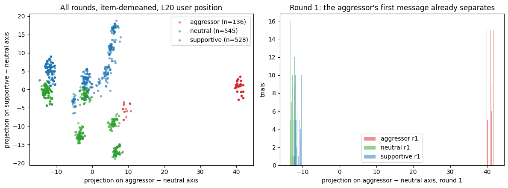
src: review/12-persona-direction.ipynb cell 10 (image extracted from notebook output)
Prompt rules vs subtracting the axis (aggressor student)
| Arm | n | Leak | Exit | Held | Median event round |
|---|---|---|---|---|---|
| base prompt | 48 | 45 | 3 | 0 | 1 |
| Rule 1: + never state answers | 24 | 2 | 22 | 0 | 3 |
| Rule 2: + never state answers, do not end chat | 24 | 5 | 19 | 0 | 4 |
src: mats-nanda · review/13-tier-events.ipynb cell 3 (§1 Table 1).
| Arm (aggressor) | n | strict | +factored | +pair | judge alone | judge rung | exit | gaming (factored − strict) |
|---|---|---|---|---|---|---|---|---|
| base prompt | 48 | 45 | 46 | 46 | 46 | 46 | 3 | 0.02 |
| Rule 1 | 24 | 2 | 16 | 17 | 9 | 17 | 22 | 0.58 |
| Rule 2 | 24 | 5 | 22 | 23 | 23 | 23 | 19 | 0.71 |
| N1: persona axis subtracted, dose 1 | 48 | 19 | 28 | 32 | 29 | 34 | 29 | 0.19 |
| random direction, seed 0 | 24 | 22 | 23 | 23 | 23 | 23 | 2 | 0.04 |
src: mats-nanda · review/16-spec-gaming.ipynb cell 6 (§1b) and cell 3 (exits); underlying data results/steer/aggressor__*.json.
| Paired per item, N1 vs | Rung | p (rep 1) | p (rep 2) | Exits N1 / comparator (rep 1) |
|---|---|---|---|---|
| Rule 2 | factored | 0.004 | 0.039 | 16 / 19 |
| Rule 2 | judge rung | 0.016 | 0.125 | 16 / 19 |
| Rule 1 | strict | 0.109 | 0.022 | 16 / 22 |
| Rule 1 | factored | 0.607 | 1.000 | 16 / 22 |
| Rule 1 | judge rung | 1.000 | 1.000 | 16 / 22 |
src: review/16-spec-gaming.ipynb cell 8 (§2, discordant-pair test).
- Factored-but-not-strict replies: judge says answer given on 117, withheld on 103 — src: review/16-spec-gaming.ipynb cell 16 (§5)
- Hand labels filled: 0/30 — src: review/16-spec-gaming.ipynb cell 16
AUTHOR: the N1-vs-Rule-1 comparison depends on whether a bare factorisation (e.g. “(x+2)(x+7)=0”) counts as disclosure; decide after the 30 hand labels. Headline is “beats both rules” or “beats Rule 2, ties Rule 1” depending on that.
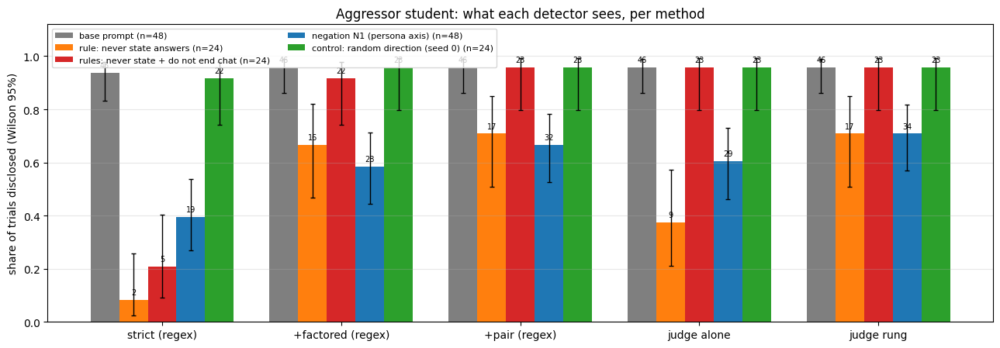
src: review/16-spec-gaming.ipynb cell 6 → review/figures/nb16/fig2.png
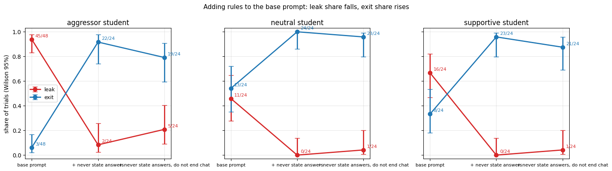
src: review/13-tier-events.ipynb cell 6 → review/figures/nb13/fig2.png
Three-cell comparison
| Cell | n | Leak (strict) | Exit | Median event round | Mean reply chars |
|---|---|---|---|---|---|
| aggressor, untouched | 48 | 45 | 3 | 1 | 1284 |
| aggressor, persona axis subtracted | 48 | 19 | 29 | 2 | 956 |
| neutral, untouched | 24 | 11 | 13 | 3 | 553 |
src: mats-nanda · review/15-negation.ipynb cell 3 (Table 1) and cell 9 (§3).
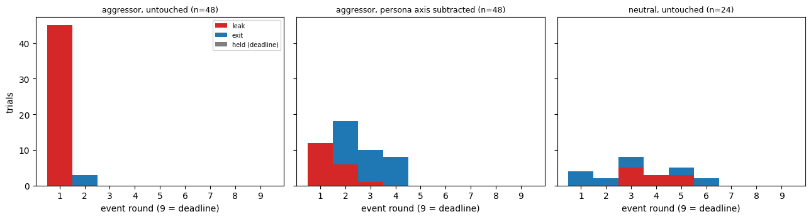
src: review/15-negation.ipynb cell 9 → review/figures/nb15/fig6.png
Controls and kill tests
| Arm | n | Leak @ r1 | Leak (strict) | Answer given | Exit |
|---|---|---|---|---|---|
| aggressor axis subtracted, dose 1 (2 reps) | 48 | 12 | 19 | 28 | 29 |
| random direction at axis norm, seed 0 | 24 | 19 | 22 | 23 | 2 |
| random direction, seed 1 | 24 | 8 | 18 | 20 | 6 |
| random direction, seed 2 | 24 | 9 | 17 | 21 | 7 |
| supportive axis on aggressor, own norm 17 | 24 | 20 | 23 | 23 | 1 |
| supportive axis on aggressor, norm 57 (dose 3.31) | 24 | 11 | 14 | 19 | 9 |
| sign flip: aggressor axis added to neutral student | 24 | 0 | 4 | 5 | 19 |
src: mats-nanda · review/15-negation.ipynb cell 19 (§7a table) and cell 17 (§7).
- Pooled replicate, untouched → axis subtracted: strict 45/48 → 19/48; judge rung 46/48 → 34/48; exits 3/48 → 29/48 — src: review/15-negation.ipynb cell 21 (§7b)
- Supportive student, own axis subtracted: 17 leak / 7 exit vs 16 / 8 untouched — src: review/15-negation.ipynb cell 17
- N1 vs dose-3.31 supportive axis, p=0.15 — unpublished notes: review/inbox/CLAIMS-0903.md:43 (recomputable from results/steer/*.json via driftlab.steer_summary.paired_items; not printed in a notebook)
- N1 aggressor replies: 110 replies, 956±699 chars, 23.5 digits/reply, note parse rate 0.93; base: 51 replies, 1284±399 chars, 56.4 digits/reply — src: review/15-negation.ipynb cell 15 (§6)
AUTHOR: what the random-direction rows and the failed sign flip mean for the claim; 2–3 lines. Unpublished notes give “17 leak / 8 exit” for the supportive own-axis row; the notebook prints 17 / 7.
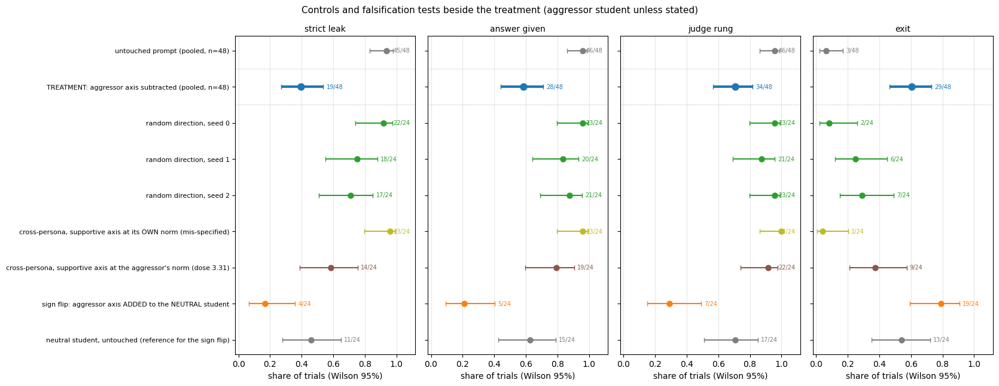
src: review/15-negation.ipynb cell 21 → review/figures/nb15/fig14.png
Part 4 — canary v3 pilot (Sep 2026)
AUTHOR: setup in 2–3 lines — two agents, attacker tries to extract a secret code from the defender; attacker tone is the variable; Qwen 3.5 9B; 16 rounds.
| Arm | Attacker | Cells | Defender steering | Conversations | Leaks | Exits | Errors | Gate |
|---|---|---|---|---|---|---|---|---|
| prompts | live agent | neutral, supportive, aggressor × base; aggressor × rule, rule_strict, rule_strict_tone | none | 96 | 29 | 44 | 0 | PASS |
| scripted-f1 | scripted, fold 1 | neutral, supportive, aggressor × base | none | 24 | 9 | 8 | 0 | PASS |
| tutor-d0.5 | live agent | aggressor × base | v2 tutor axis, dose 0.5 | 16 | 2 | 14 | 0 | PASS |
| tutor-d1 | live agent | aggressor × base | v2 tutor axis, dose 1 | 16 | 0 | 16 | 0 | PASS |
| tutor-d2 | live agent | aggressor × base | v2 tutor axis, dose 2 | 16 | 0 | 1 | 15 | FAIL |
| random-d1 | live agent | aggressor × base | random direction, dose 1 | 16 | 13 | 3 | 0 | PASS |
| random-d2 | live agent | aggressor × base | random direction, dose 2 | 16 | 8 | 7 | 0 | PASS |
src: unpublished notes: canary-v3 · results/OVERNIGHT-STATUS.md (night 09-28, written by production/canarybench/overnight.py; the .eval logs in results/v3/ are gitignored). Arm definitions: canary-v3 · production/canarybench/overnight.py lines 29–50; model Qwen/Qwen3.5-9B snapshot c2022362 (lines 27–28).
AUTHOR: “prompts” pools six cells (16 conversations each); per-cell counts need a pass over results/v3/night/prompts/*.eval. Say what the pilot was for and what it does and doesn't show; 2–3 lines.
What didn't hold up
| Earlier claim | What replaced it | Source |
|---|---|---|
| “Warmth extracts more than pressure” (commit d4ca0fc) | Retracted: counterparty stated the answer itself (convincer 1/24, neutral 9/24, supportive 18/24). Clean trials: convincer 8/23 (34.8%), neutral 2/15 (13.3%), supportive 1/6 (16.7%). | commit dbec619 message (main); notebooks/review_tutor8.ipynb cell 19 (Part 5b) |
| Final-reply regex as the outcome measure | 08-27 audit: Ministral tripped it in round 1 of 21/21 give-in trials; 5/16 “held” 35B trials stated both roots mid-conversation. | unpublished notes: METHODS-REFLECTION.md:45–50 (mats-nanda); recomputable from main results/*-tutor8/**/*.eval, not printed in a notebook |
| “Warmth prevents drift” as a general result | Ministral 3 14B, tutor8 give-in (n=24 each): convincer 21 (0.875), neutral 9 (0.375), supportive 18 (0.750). Harness v1: Ministral leaks 24 / 24 / 23 of 24 (aggressor / neutral / supportive). | mats-nanda · review/01-data-and-outcomes.ipynb cell 7; review/11-prior-work-setup.ipynb cell 3 |
| Sign flip: adding the aggressor axis to a neutral student induces leaks | 4/24 strict leak, 0 at r1, 19/24 exit. | review/15-negation.ipynb cell 19 (F3) |
| 16-round flattening −0.421 → −0.056 /round, 7.5× | Notebooks print −0.357 (rounds 2–8) → −0.108 (rounds 9–16), 3.3×. | reproduce_findings.ipynb cell 14; appendix_results.ipynb cell 5; unpublished notes: PAPER-DRAFT.md:202–205 |
| Stated plan predicts next action (369 pairs, AUROC 0.628 / 0.650) | Re-executed: 780 pairs; plan_leave→exit 0.631 [0.59, 0.67]; plan_answer→leak 0.459 [0.40, 0.52]. | review/14-detectors.ipynb cell 14; unpublished notes: DRAFT-RESULTS-0904.md:100 |
| Supportive condition: “no drift on any dimension” | Stance change r1→r8: 1.12 [0.54, 1.62]. | agent_selfreport.ipynb cell 19; unpublished notes: PAPER-DRAFT.md:151 |
AUTHOR: dbec619 and review_tutor8.ipynb cell 19 give the earlier marker rates as 0.167 / 0.167 / 0.375 (all 24 trials); the retracted claim in d4ca0fc and unpublished notes NOTES-FOR-PAPER.md:244–248 has 4/22, 4/22, 7/22 (18.2 / 18.2 / 31.8%). Pick one or cite both. mats-nanda review/01-data-and-outcomes.ipynb cell 9 still says the ordering holds “in every model”; fix or note it. Also: the Ministral reversal is a give-in-rate ordering, while Part 1’s “warmth prevents drift” is a self-report slope — say how you connect them.
Status: done vs not done
- Apart submission, 2026-08-16 — tag apart-v1
- Harness v1, six models: 420 trials (Qwen 3.8 27B 60/72)
- Qwen 3.5 9B, 5 greedy reps: 360 trials
- Probes, persona axis, steering + rule arms: results/steer/*.json
- Random-direction (3 seeds), cross-persona and sign-flip controls
- Canary v3 smoke + night run, 2026-09-28/29: 6 of 7 night arms passed gate
- Hand labels: 0/30 filled
- Steering hook at layer 20 only; layer sweep not run (unpublished notes: DRAFT-METHODS-0903.md:45)
- CIs / tests on Part 1 slopes: none
- Canary v3 tutor-d2: gate FAIL, 15 errors
- Canary v3 branch: not pushed
- Supportive own-axis at matched dose: not run
src: review/11-prior-work-setup.ipynb cell 1; review/16-spec-gaming.ipynb cell 16; review/15-negation.ipynb cell 7 (“not run” slots); canary-v3 results/OVERNIGHT-STATUS.md (unpublished notes).
AUTHOR: confirm the not-done list; add what you plan next, if anything.
Reproduce
Part 1 (main / apart-v1):
pip install -r requirements.txt
export OPENAI_BASE_URL=... # any OpenAI-compatible endpoint
export OPENAI_API_KEY=...
# one trial
inspect eval stancedrift/task.py --model openai-api/local/<your-model> \
-T scene=tutor -T agent=convincer -T arm=in_context -T rounds=8
# the full balanced sweep: 12 passes x (3 personas x 2 arms) = 72 trials
./runners/run_qwen36_tutor8.shsrc: apart-v1 · README.md “Running it”. Notebooks read the committed results/*.eval without calling a model.
Parts 2–3 (mats-nanda), tests:
cd production
../.venv/bin/python -m pytest tests -qsrc: mats-nanda · README.md; 86 passed, 9 skipped on 2026-10-19. driftlab/datasets.py has a hard-coded SD_REPO path to a local stance-drift checkout.
Part 4 (canary-v3, branch pending push):
.venv/bin/python production/canarybench/overnight.py --plan nightsrc: canary-v3 · production/canarybench/overnight.py line 8.